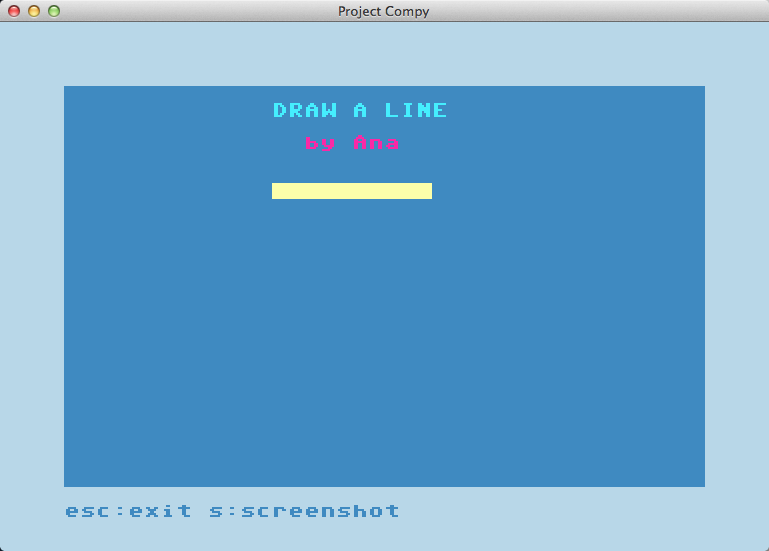

Challenges
Here you will find challenges and their solutions.Draw one line
Can you draw a yellow line like the one in this example?

def my_program():
clear_screen()
printf()
printf(' DRAW A LINE', color=17)
printf()
printf(' by Ana', color=19)
printf()
printf()
printf(' ', stay=True)
printf(' ', reverse = True, color = 'light-yellow')
###########################################################################
###########################################################################
# The next lines are needed to run compy, don't mind them,
# but keep them, don't get rid of these lines
###########################################################################
###########################################################################
def clear_screen(): pass
def set_bg_color(color): pass
def set_fm_color(color): pass
def printf(to_print='', color=None, stay=False, reverse=False): pass
def xyprintf(x, y, *args): pass
def poke(x, y, code, color = None, reverse=False): pass
def peek(self, x, y): pass
def input(message = '', color=None): pass
def wait_key(): pass
def check_key(): pass
def redefine_commands(screen):
global clear_screen, set_bg_color, set_fm_color, printf, xyprintf
global poke, peek, input, wait_key, check_key
clear_screen = screen.clear_screen
set_bg_color = screen.set_bg_color
set_fm_color = screen.set_fm_color
printf = screen.printf
xyprintf = screen.xyprintf
poke = screen.poke
peek = screen.peek
input = screen.input
wait_key = screen.wait_key
check_key = screen.check_key
my_program()
import compy
compy.run(redefine_commands)
###########################################################################
###########################################################################
Sum two numbers
This is a simple example,

def my_program():
clear_screen()
printf()
printf('SUM TWO NUMBERS', color=4)
printf('===============')
printf()
first_value = input("Give me one number: ", color=8)
second_value = input("Give me another number: ")
sum_of_values = first_value + second_value
response = 'The sum of {} and {} is {}'.format(first_value, second_value, sum_of_values)
printf()
printf(response, color=6)
###########################################################################
###########################################################################
# The next lines are needed to run compy, don't mind them,
# but keep them, don't get rid of these lines
###########################################################################
###########################################################################
def clear_screen(): pass
def set_bg_color(color): pass
def set_fm_color(color): pass
def printf(to_print='', color=None, stay=False, reverse=False): pass
def xyprintf(x, y, *args): pass
def poke(x, y, code, color = None, reverse=False): pass
def peek(self, x, y): pass
def input(message = '', color=None): pass
def wait_key(): pass
def check_key(): pass
def redefine_commands(screen):
global clear_screen, set_bg_color, set_fm_color, printf, xyprintf
global poke, peek, input, wait_key, check_key
clear_screen = screen.clear_screen
set_bg_color = screen.set_bg_color
set_fm_color = screen.set_fm_color
printf = screen.printf
xyprintf = screen.xyprintf
poke = screen.poke
peek = screen.peek
input = screen.input
wait_key = screen.wait_key
check_key = screen.check_key
my_program()
import compy
compy.run(redefine_commands)
###########################################################################
###########################################################################
Guess the number
This is a simple example,
# This is a guess the number game.
import random
import compy
def main(sc):
sc.printf('Well, I am thinking of a number between 1 and 20.')
sc.printf()
number = random.randint(1, 20)
num_guesses_taken = 0
while True:
guess = sc.input('Take a guess: ')
guess = int(guess)
num_guesses_taken = num_guesses_taken + 1
if guess < number:
sc.printf('Your guess is too low.')
elif guess > number:
sc.printf('Your guess is too high.')
elif guess == number:
sc.printf()
msg = 'Good job! You guessed my number in {} guesses!'.format(num_guesses_taken)
sc.printf(msg)
break
else:
pass # Don't do anything
sc.printf()
if num_guesses_taken == 5:
msg='Nope. The number I was thinking of was {}'.format(number)
sc.printf(msg)
break
compy.run(main)